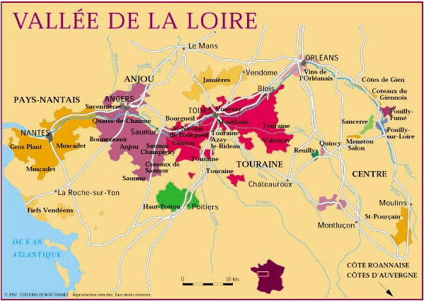

Terroir
Les cépages
Les cépages qui composent la sélection PATHOM sont les deux variétés nobles et emblématiques du Val de Loire, façonnées par le savoir-faire du Château de la Bretaudière :
Le Cabernet Franc, utilisé pour notre Saumur Rouge ainsi que pour notre Rosé, est reconnu pour son développement idéal sur les terroirs argilo-calcaires du domaine. Sous ce climat septentrional, il donne naissance à des vins d'une finesse et d'une élégance rares.
Le Chenin Blanc, que nous sublimons à travers notre Saumur Blanc, notre Saumur Brut et notre Coteaux du Layon. Cépage de caractère hautement typique de la région, il incarne à merveille la pureté et la complexité des terroirs de notre vignoble.
Ces deux cépages sont plantés à une densité exigeante de 5 000 pieds par hectare ou plus, garantissant une concentration optimale des baies.

Le climat
Le climat de la région est semi-océanique, offrant des températures douces et constantes. Cependant, les parcelles du Château de la Bretaudière bénéficient d'un microclimat unique propre à Saumur-Doué-en-Anjou, plus chaud et plus sec que le reste du Val de Loire.
Avec seulement 525 mm de précipitations annuelles (contre une moyenne nationale de 900 mm), ce microclimat privilégié permet à PATHOM de vous proposer de grands Rouges de garde, qui exigent plus d'ensoleillement, mais aussi des liquoreux d'exception comme le Coteaux du Layon. Cette météo d'exception s'explique par les collines environnantes qui protègent le Saumurois des perturbations majeures venues de l'océan, situé à 150 km au Sud-Ouest.
Les sols
Si le sol de surface est argilo-calcaire (datant du Crétacé – Turonien Supérieur), le sous-sol est issu de sédiments déposés il y a 80 à 90 millions d'années. C'est cette histoire géologique qui a permis la formation d'une craie dure, blanche ou ocre clair : le tuffeau. Cette roche unique permet à la pluie d'humidifier le sous-sol en profondeur et de restituer l'eau de manière régulière à la vigne durant l'été, à la manière d'une éponge.
Ce tuffeau, qui a servi à la construction des plus grands Châteaux de la Loire ainsi que de prestigieux édifices jusqu'en Angleterre, a laissé place sous le domaine à de magnifiques galeries souterraines. Ces caves historiques s'avèrent idéales pour l'élevage des cuvées sélectionnées par PATHOM, car les températures y restent fraîches et parfaitement constantes tout au long de l'année.